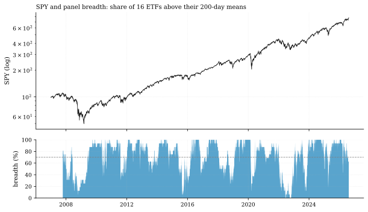
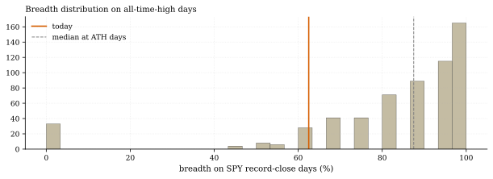
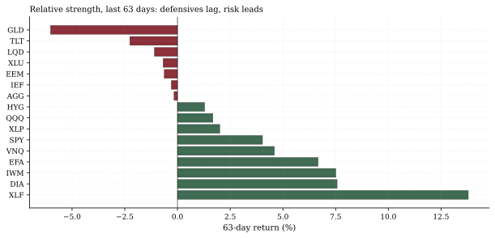

The one-paragraph version. As of Aug 14, SPY sits 0.20% below its August 13 record, but only 62.5% of our 16-ETF universe trades above its 200-day mean. Conditioning on history: across 601 record-close days since 2007, median breadth was 87.5%, and 73.2% of record days had breadth above 80%. Today's reading is in the 13th percentile of record-day breadth — and all 120 record days with breadth at or below 70% clustered in years you remember (2007, 2013, 2015–18, 2021, 2026). The cyclical-vs-defensive spread confirms it: +6.0 percentage points over 63 days, with financials leading and gold, long bonds, and utilities lagging.
How we worked this problem
Breadth claims are usually vibes with a chart. We make them testable: define breadth as the share of the 16-ETF panel above its 200-day mean (a measurable, honest proxy for the S&P breadth we cannot compute from ETFs), then condition on the days that matter — record closes — and ask where today sits in that conditional distribution. Rotation direction and speed come from 63-day momentum ranks and their churn.
The data audit
| # | Source | Coverage | As-of | Notes |
|---|---|---|---|---|
| 1 | 16-ETF daily panel | 4,935 sessions, 2007-01-03 → | 2026-08-14 | Breadth = share above 200d mean |
External breadth claims (single-stock S&P breadth, sector counts) are from the reading list and labeled as such — our panel is ETF-level, a disclosed proxy.
The exhibits
Records usually come with confirmation. 601 ATH days since 2007; median breadth on those days 87.5%; 73.2% above 80%. All-days average breadth is 68.4% — records historically ran broader than ordinary days. As of Aug 14: breadth 62.5%, below even the all-days norm, 13th percentile among record days, and 37th percentile among all days.


The rotation underneath is one-way. 63-day returns: XLF +13.8%, DIA +7.6%, IWM +7.5% lead; LQD −1.1%, TLT −2.3%, GLD −6.0% lag. Cyclical basket +5.6% vs defensive basket −0.4% (spread +6.0pp). Gold is the interesting exception in motion: 2.6% below its 200-day mean, yet +9.0% over the last 20 sessions — a bounce inside a larger downtrend.

And it is not churning. Our rank-churn gauge (21-day change in 63-day momentum ranks) reads 14 versus a median of 21 — the 24th percentile. This is a settled risk-on rotation, not a top forming through violent leadership flips. Slow rotation extends; it does not promise.
So what — opportunities
- The laggards are the trade location. External desks flag the same narrowness (May 2026: index +5.3% while eight of eleven S&P sectors fell — Venquest; "Great Narrowing" — RBC). When breadth normalizes, the marginal buyer is in the laggards — our gold bounce reading (+9.0% in 20 sessions from below the 200d) is the template.
- Confirmation watch is cheap. Breadth >70% would move today's reading from the 13th percentile of record days toward the middle of the conditional distribution — a defined, falsifiable line for the next issue.
So what — risks
- Narrow records are fragile records. Several narrow-ATH years in our sample (2007, 2015–16, 2018, 2021) preceded drawdowns or long sideways grinds; the median worst point of the 63 sessions after a narrow record day is −2.6%, and the worst case −15.4% (across the 120 narrow days). Narrowness is not a timer, but it lowers the fault tolerance for disappointment.
- External balance, stated honestly: Bloomberg counts 25 record closes in 2026 through early August; Proactive's H1 read broadened single-stock participation (46% of members beating the index vs 28% in 2024). Both can be true — index construction concentrates; our ETF proxy measures the asset-class complex, not the S&P itself.
Machinery
All numbers: analysis.py → assets/numbers.json, regenerated from house data in a single run before publication.
Limitations
16-ETF panel is an asset-class proxy, not S&P constituent breadth (external links cover the single-stock view); 200-day lookback biases breadth low early in the sample; ATH conditioning uses overlapping adjacent records (601 days, many consecutive); rank-churn percentile is sample-dependent.
Sources — external reading list
| Claim | Source |
|---|---|
| "Great Narrowing" concentration | RBC Wealth Management |
| 25 record closes in 2026 through early Aug | Bloomberg, Aug 6 2026 |
| May 2026: +5.3% index day, 8/11 sectors negative | Venquest Group |
| H1 2026 single-stock breadth improved (46% beat) | Proactive Advisor Magazine |
Internal sources: the lineage row above. Not investment advice.
200d breadth series; ATH-day conditioning; 63d momentum ranks; rank churn